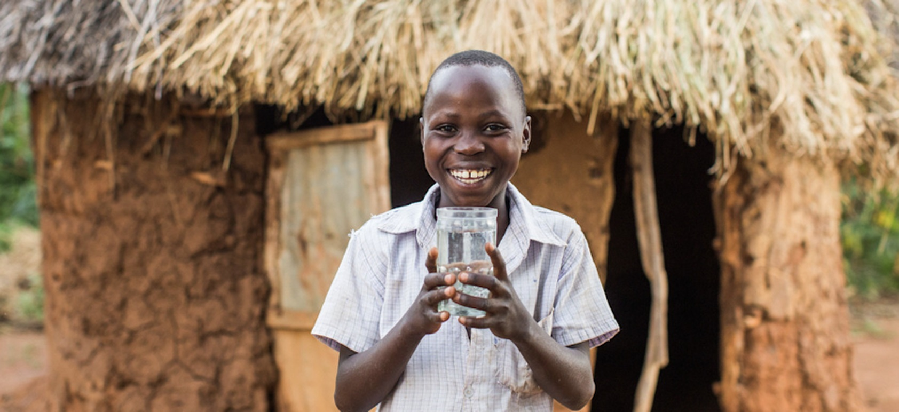

South Bay, California • Global reach
Awareness
becomes action.
AquaReach Initiative turns awareness into action by helping people understand the global water crisis and discover ways to make a difference.

What we do
Learn. Connect. Act.
01
Educate
Make important global issues easier to understand through accessible information and outreach.
Explore our mission → 02Share knowledge
Give researchers and curious thinkers a place to submit original work for review and possible publication.
Visit the journal → 03Take action
Join our community, support our fundraising, or help spread awareness.
Get involved →AquaReach Initiative